Carpeta del proyecto · Proyecto institucional 6to año
Smart Campus IoT
Esta es la carpeta del proyecto: reúne la planificación, el diseño técnico y el seguimiento del trabajo durante el año. Sigue los apartados de la Documentación sugerida de la propuesta ejecutiva del Proyecto Institucional 6to año 2026. Le suma dos análisis transversales: Investigación Operativa y Seguridad Informática.
Recorrido sugerido
1 · Presentación
Objetivo, problema, alcances, equipo y asignaturas.
2 · Planificación
Scrum, sprints, carta Gantt y entregables.
3 · Diseño técnico
Arquitectura, plano, componentes, firmware, servidor y dashboard.
4 · Seguimiento
Presupuesto, bitácora de pruebas y resultados.
Guía de uso
Cómo editar, completar y publicar esta documentación.
Proyecto en vivo
Ver el proyecto
Vista previa del dashboard del equipo. Pueden probar cómo se ve en una computadora, una tablet o un celular.
El proyecto todavía no está publicado
Cuando el dashboard tenga una dirección pública, cárguenla en previewUrl dentro de assets/js/datos.js y se va a ver acá.
Mientras tanto pueden escribir una dirección arriba para probar el visor (solo queda guardada en este navegador).
Accesos
Dashboard publicado
Repositorio del código
Primera sección
1. Control de cambios
Registro de las modificaciones de la documentación y del alcance del proyecto. Cada vez que el equipo, el Product Owner o el auditor aprueban un cambio, se agrega una fila nueva.
| cambio | Fecha | Responsable | Detalle del cambio |
|---|
Primera sección
2. Objetivo y visión general
Objetivo
Diseñar, construir e implementar un sistema tecnológico integral basado en ESP32, capaz de relevar variables del entorno escolar en tiempo real, procesarlas, almacenarlas y visualizarlas en un tablero central.
El equipo trabaja como un equipo profesional de ingeniería: desarrolla un producto real, escalable y demostrable, presentado como una plataforma institucional con módulos reales.
Objetivo del nodo Siniestro
Diseñar, construir y poner en funcionamiento un nodo IoT basado en el ESP32-C3 Mini que detecte de manera temprana situaciones de riesgo (humo, llama, gases combustibles, movimientos bruscos y cambios de temperatura) en el Lab. de Informática 3, las muestre en su propio display y las envíe por MQTT al Dashboard general, para que la escuela pueda actuar a tiempo.
Para lograrlo, el equipo se propone:
- Medir temperatura, humedad, gas y humo, llama y movimiento con cuatro sensores: DHT22, MQ-2, sensor de llama IR y MPU6050.
- Definir y ajustar los umbrales de alerta a partir de mediciones propias.
- Publicar los datos por MQTT y verlos en el dashboard, con semáforo y alertas.
- Montar el nodo de forma prolija y segura en una caja estanca.
- Documentar el proceso, las pruebas y los costos.
Visión general
Se monta una red de nodos inteligentes distribuidos en distintos sectores de la escuela. Cada nodo, construido con un ESP32 y sensores, mide el ambiente, muestra los valores en su display LCD y envía los datos por WiFi a un servidor central. El servidor recibe, procesa y guarda los datos, y los publica en un dashboard web que se puede ver desde una PC, una notebook o una pantalla institucional.
Variables que puede monitorear el sistema
Temperatura, humedad, luminosidad, calidad de aire (CO).
Presencia, nivel sonoro (dB), estado de un aula o laboratorio.
Humedad de suelo de la huerta, consumo eléctrico básico.
Estado de la red de datos (latencia y señal WiFi).
Humo y gases combustibles (MQ-2), llama (sensor IR), movimiento brusco o golpe (MPU6050), y temperatura y humedad (DHT22).
Módulos del sistema
| Módulo | Qué mide o muestra |
|---|---|
| 1 · Monitoreo ambiental de aulas | Temperatura, humedad, luz, presencia |
| 2 · Monitoreo de laboratorio | Temperatura, humedad, ruido, estado del espacio |
| 3 · Exterior / huerta | Temperatura exterior, humedad de suelo, luz ambiente |
| 4 · Tablero central institucional | Dashboard general, ranking por estado, semáforo por sectores, histórico |
| 5 · Alertas | Alta temperatura, humedad fuera de rango, nodo desconectado, y alertas de gas o humo, llama y movimiento brusco del nodo Siniestro |
| 6 · Detección de siniestros (nodo Siniestro) | Humo y gas, llama, movimiento brusco, temperatura y humedad |
Primera sección
3. Problema a resolver
La escuela no tiene un sistema centralizado para observar las variables importantes de sus espacios. Hoy se decide "a ojo".
Lo que hoy no se sabe
- Qué aulas tienen peor ventilación.
- Qué laboratorio tiene mayor temperatura.
- Qué sectores quedan encendidos o activos fuera de horario.
- Qué condiciones ambientales afectan el trabajo o el aprendizaje.
- Cómo tomar decisiones con datos reales.
Qué aporta la solución
El proyecto transforma esos datos invisibles en información útil y visible, tal como lo hace un sistema BMS (Building Management System) profesional en un edificio real.
Demostrar que la escuela puede tomar decisiones a partir de datos reales.
Problema que resuelve el nodo Siniestro
El nodo Siniestro es un dispositivo de monitoreo y seguridad que busca detectar de manera temprana situaciones de riesgo en el sector donde se instala, el Lab. de Informática 3: incendios, humo, fugas de gas, aumentos peligrosos de temperatura o movimientos bruscos. Las informa a la estación principal para que se pueda actuar a tiempo.
Es un nodo de detección temprana experimental: un prototipo con fines educativos que no representa un sistema contra incendios certificado y no reemplaza a los sistemas de seguridad oficiales de la institución.
Para reducir las falsas alarmas, el diseño busca combinar la información de varios sensores (humo, llama y temperatura) en lugar de depender de uno solo. En esta etapa cada sensor se evalúa por separado y el nodo envía todas las mediciones, de modo que el cruce de datos puede hacerse en la estación principal o sumarse al nodo como mejora.
Qué se observa hoy en el Lab. de Informática 3
Hoy el laboratorio no tiene un aviso a distancia: si aparece humo, una pérdida de gas, fuego o un golpe fuerte sobre un equipo, la única forma de enterarse es que haya alguien presente que lo vea, lo huela o lo escuche. Fuera del horario de clases, o con el laboratorio vacío, el problema puede avanzar sin que nadie lo note. Además, un laboratorio de informática concentra muchos equipos eléctricos conectados al mismo tiempo, por lo que el riesgo principal es un principio de incendio de origen eléctrico más que una fuga de gas.
Qué decisión puede tomar la escuela con los datos del nodo
- Actuar a tiempo. Si el dashboard marca una alerta de humo, llama o gas, avisar a una persona responsable para que vaya a verificar el sector, ventile, corte la energía si hace falta y, si se confirma el peligro, evacúe y llame a emergencias.
- Distinguir una falsa alarma de una emergencia real. Mirar qué sensores se activaron juntos: humo, llama y aumento de temperatura al mismo tiempo es mucho más grave que un valor aislado.
- Revisar con datos. El histórico de 24 horas permite ver si hay horarios o momentos donde suben el humo o la temperatura, y decidir una revisión de la instalación eléctrica o de los equipos del laboratorio.
- Decidir si conviene ampliar. Si el nodo funciona bien, la escuela puede evaluar sumar nodos parecidos en otros sectores.
Primera sección
4. Alcances
Esta carpeta documenta el nodo Siniestro, así que los alcances que siguen son los del nodo. El broker MQTT y el Dashboard general son parte de la plataforma compartida del proyecto institucional: el nodo se conecta a ellos, pero no los construye.
Niveles de complejidad
Todos los equipos
- ESP32 conectado
- Lectura de al menos 2 variables
- Envío por MQTT
- Visualización en el dashboard
Equipos que avanzan más
- Gabinete definitivo
- Actualización OTA (Over-The-Air)
- Histórico avanzado y alertas
- Módulo exterior o de consumo energético
- Análisis estadístico
Alcance del nodo Siniestro
Qué incluye el nodo
- Microcontrolador ESP32-C3 Mini con antena agregada
- Cuatro sensores: MQ-2 (gas y humo), sensor de llama IR, acelerómetro MPU6050 y DHT22 (temperatura y humedad)
- Display LCD 16x2 con un pulsador para cambiar de página
- Envío por MQTT cada 2 segundos, o de inmediato cuando cambia una alarma
- Página web propia del nodo, con los datos en formato JSON (ruta /data)
- Caja estanca de 115 x 115 x 100 mm
Qué no incluye
- Certificación como sistema contra incendios
- Reemplazo de los sistemas de seguridad oficiales de la institución
- Cruce automático de sensores dentro del nodo (hoy se evalúa cada sensor por separado)
- Umbral de alerta de temperatura (el nodo mide y envía el valor, pero no define alerta)
- Servidor Linux, broker MQTT ni base de datos propios (se usan los de la plataforma general; el dashboard del nodo guarda las últimas 24 h en el navegador de quien lo abre)
- Actuar sobre el entorno: el nodo solo detecta y avisa, no corta gas ni energía
Primera sección
5. Equipo e integrantes
· · Nodo asignado:
Integrantes
Roles dentro del equipo
Organización y reportes
Project Manager: Torrecilla · 2.º Project Manager: De Donato · 3.er Project Manager: Torres. Ayudantes: Torrecilla colabora con Desarrollo (De Donato) y Florentino con Aplicaciones (Pittis).
Docentes
| Asignatura | Docente |
|---|
Auditor de los proyectos: Pedaci Lourdes
Primera sección
6. Asignaturas involucradas
El proyecto es interdisciplinario: cada asignatura aporta una parte del mismo producto. En la defensa final cada parte se explica por separado, pero todo funciona conectado.
Diseño y construcción física del nodo
- Selección de sensores y lectura de datasheets
- Diseño del circuito, protoboard y versión definitiva
- Soldado, montaje, gabinete y alimentación
Productos: prototipo físico, esquema eléctrico, lista de materiales, instructivo de armado.
Plataforma central
- Servidor Linux, red, usuarios y acceso remoto
- Docker o servicios nativos: broker MQTT, base de datos, servicio web
- Monitoreo, backup y restauración
Productos: servidor documentado, diagrama de servicios, manual de instalación, procedimiento de recuperación.
Interfaz y visualización de datos
- Diseño del dashboard y experiencia de usuario
- Tiempo real, gráficos históricos, tarjetas por sector
- Alarmas visuales e identidad visual del proyecto
Productos: dashboard navegable, maqueta UX/UI, vista responsive, panel de alertas.
Firmware y lógica del nodo
- Programación del ESP32 y lectura de sensores
- Publicación MQTT, reconexión automática, validación de datos
- Manejo de errores y OTA opcional
Productos: firmware modular, librerías reutilizables, documento de tópicos MQTT.
Decisiones con modelos
- Red PERT/CPM y camino crítico del proyecto
- Matriz de decisión para elegir sensores
- Optimización del presupuesto y la ubicación de nodos
Productos: red del proyecto con holguras, matriz de decisión justificada, modelo de optimización.
Proteger el sistema y los datos
- Inventario de activos y matriz de riesgos
- Seguridad física del nodo y seguridad lógica del servidor
- Protección del broker, credenciales y marco legal
Productos: matriz de riesgos, plan de controles, checklist de hardening, informe de auditoría.
Segunda sección
7. Planificación y metodología Scrum
Planificar es pensar antes de actuar: definir qué se quiere lograr, qué recursos hacen falta, qué pasos seguir, en qué orden, y cómo controlar si el trabajo avanza bien.
Una buena planificación hace que el proyecto no dependa de la improvisación: el equipo analiza la necesidad, define objetivos, reparte tareas, elige materiales y herramientas, estima tiempos, prevé problemas y establece criterios para evaluar el resultado.
Scrum en el proyecto
Scrum es un marco de trabajo ágil que organiza el trabajo en ciclos cortos llamados sprints. En cada sprint el equipo planifica, desarrolla, revisa y mejora para entregar valor de forma rápida y controlada.
| Rol Scrum | Quién lo cumple | Qué hace |
|---|---|---|
| Product Owner | Auditor de los proyectos (docente) | Representa la visión de la escuela como cliente. Define el objetivo del sprint y acepta o rechaza los entregables. |
| Scrum Master | Project Manager del equipo | Cuida que el equipo siga las prácticas acordadas, elimina obstáculos y reporta al auditor. |
| Equipo de desarrollo | Desarrollo, Aplicaciones, Infraestructura | Construye el producto y se organiza de forma autónoma para cumplir la meta del sprint. |
Ciclo de un sprint
¿Qué vamos a entregar y cómo lo vamos a hacer? Se fija una meta clara.
No se hacen cambios que pongan en riesgo la meta. Se mantienen los estándares de calidad.
Se muestra lo hecho al Product Owner, que da feedback y acepta o no el entregable.
El equipo analiza cómo trabajó, qué problemas hubo y qué mejora en el próximo ciclo.
Un sprint dura entre 1 y 4 semanas y nunca más de un mes. En este proyecto se usan sprints de semanas (se ven en la carta Gantt).
Registro de sprints
| Sprint | Meta | Entregado | Retrospectiva |
|---|---|---|---|
| S5 y S6 25/05 al 05/07 | Conseguir los materiales y organizar el trabajo. |
| Sin complicaciones registradas. Salió bien: la compra se organizó entre todos y los roles se repartieron según las habilidades de cada uno. |
| S7 y S8 06/07 al 16/08 | Probar el ESP32-C3 Mini con el DHT22 y el display, y definir el nodo. | Hubo receso invernal del 20 al 31/07.
| Complicaciones:
Retrospectiva: Salió bien: la práctica con el DHT22 funcionó aun con el ESP de pines invertidos. Para mejorar: confirmar los pines según el modelo de ESP y dejar escrito, en un solo lugar, lo que se define en clase. |
| S9 17/08 al 06/09 | Comprar los sensores y probar cada uno por separado. |
| Complicaciones:
Retrospectiva: Salió bien: comprar junto con otro equipo bajó el costo del envío, y probar cada sensor por separado permitió corregir los errores de pines antes de juntarlos. Para mejorar: la página web quedó al 70 %. |
| S10 07/09 al 27/09 | Probar todos los sensores juntos en la protoboard. |
| Complicaciones:
Retrospectiva: Salió bien: cuando alguien faltó, otro compañero cubrió su tarea. De Donato estuvo ausente y el código lo armó Torres. Para mejorar: planificar los sprints considerando de antemano las fechas en que faltan integrantes. |
| S11 28/09 al 18/10 | Preparar la caja y la placa, y mejorar la señal WiFi. |
| Complicaciones:
Retrospectiva: Salió bien: la caja se perforó después de planificar el lugar de cada componente. Para mejorar: los planos formales quedaron al 50 %. |
| S12 19/10 al 08/11 | Enviar datos al Dashboard y armar el nodo. |
| Complicaciones:
Retrospectiva: Salió bien: medir con multímetro permitió detectar el módulo quemado, y consultar a los profesores y a otros equipos ayudó a resolver el WiFi (Martini, Barral y Werner). El equipo no se frenó ante las fallas. Para mejorar: primero se buscó la causa del WiFi en las soldaduras y en la protoboard. Cuando un módulo funciona afuera de la placa pero no adentro, conviene revisar también la alimentación mientras transmite. |
| S13 09/11 al 29/11 | Armar el nodo, ensayar y exponer. | Ya terminado | Complicaciones:
Retrospectiva: Salió bien, realizamos la prueba el 13/11 y todo en orden. El problema de la alimentacion se resolvio. |
El registro de sprints se reconstruyó a partir de la carta Gantt y la bitácora, porque el equipo no llevó un registro formal por sprint, y es el mismo que el documento Word «Registro de sprints» (que además detalla las tareas de cada sprint). Los números siguen los sprints de 3 semanas de la carta Gantt de referencia. Faltan las capturas o fotos de evidencia de cada prueba y la prueba completa del nodo armado en la caja.
Segunda sección
8. Carta Gantt
Cronograma anual de marzo a noviembre: seis etapas, tareas por área, sprints, hitos de entrega y la fecha de hoy.
8.1 Gantt del equipo
Carta Gantt real del Equipo 3 para el nodo Siniestro, actualizada el 05/11. Cada tarea muestra quién la hizo, sus fechas y su porcentaje de avance; el botón Ver despliega lo que se anotó en la bitácora.
| ID | Tarea | Responsables | Inicio | Fin | Avance | Detalle |
|---|
Falta embeber la planilla de la Gantt
Publiquen la planilla y peguen el enlace en ganttSheetUrl dentro de assets/js/datos.js.
- En Google Sheets: Archivo → Compartir → Publicar en la Web.
- Elijan la hoja de la Gantt, la pestaña Insertar y presionen Publicar.
- Copien la dirección que está dentro de
src="…"(termina en/pubhtml?…) y péguenla enganttSheetUrl.
8.2 Cronograma de referencia
Planificación institucional sugerida. Sirve de base para armar la Gantt del equipo.
◆ Hito / entregable · Línea roja: hoy · Rayado: receso invernal. En pantallas chicas la tabla se desplaza hacia el costado.
Segunda sección
9. Entregables e hitos
| Etapa | Período | Entregable |
|---|---|---|
| 1 · Lanzamiento y análisis | Marzo – Abril | Anteproyecto, diagrama inicial, propuesta de módulos |
| 2 · Diseño técnico | Abril – Mayo | Diseño del nodo, plan técnico por laboratorio, primer BOM |
| 3 · Prototipo funcional | Junio – Julio | Demo parcial funcional |
| 4 · Integración | Agosto – Septiembre | Versión beta del sistema |
| 5 · Producto final | Octubre | Versión candidata final |
| 6 · Presentación y defensa | Noviembre | Producto final, documentación completa, exposición |
Entregables mínimos
- Carpeta del proyecto (este sitio)
- Documento técnico general
- Diagrama de arquitectura
- Esquema eléctrico
- Firmware comentado
- Dashboard operativo
- Servidor documentado
- Lista de materiales
- Bitácora de pruebas
- Presentación final
Entregables opcionales
- Video demo
- Manual de usuario
- Maqueta 3D del gabinete
- Sitio web del proyecto
- Identidad gráfica y logo
Presentación tipo feria
- Puesto central de monitoreo con el sistema en tiempo real
- Afiche o panel, video breve
- Defensa interdisciplinaria
Tercera sección
10. Arquitectura del sistema
Recorrido de un dato desde que lo mide el sensor hasta que aparece en el dashboard, y qué asignatura es responsable de cada tramo.
Topología
Topología en estrella: todos los nodos IoT se comunican con un único servidor central, que concentra la base de datos. Si un nodo falla, el resto sigue funcionando; si falla el servidor, se detiene el registro (por eso importan los backups y la reconexión automática).
Plataforma central (primera implementación)
El nodo publica sus datos por MQTT en el broker Mosquitto del Dashboard general de la institución, protegido con usuario y clave, a través de la red WiFi. El dashboard del nodo se conecta a ese mismo broker mediante MQTT sobre WebSockets y se ve en el navegador, en PC y celular. Además, el propio ESP32 ofrece una página con sus datos en formato JSON (ruta /data).
Tópicos MQTT del nodo
El nodo se conecta a la red WiFi de contingencia de la institución y publica en el broker MQTT del Dashboard general, cada 2 segundos o de inmediato cuando cambia una alarma.
| Tópico | Contenido |
|---|---|
| 6to_info/A/G3/temperatura | Temperatura en °C (DHT22) |
| 6to_info/A/G3/humedad | Humedad relativa en % (DHT22) |
| 6to_info/A/G3/gases | Lectura filtrada del MQ-2 (ADC, 0 a 4095 y luego se pasa a un porcentaje) |
| 6to_info/A/G3/llama | 1 si detecta fuego, 0 si no |
| 6to_info/A/G3/posicion | 1 si el MPU6050 detecta un movimiento brusco, 0 si no |
| campus/lab-hardware/siniestro/telemetria | Mensaje JSON completo: temperatura, humedad, gases, llama, presencia, posicion, rssi y uptime |
| HTTP /data | JSON para la página web del nodo: temp, humidity, gasAlert, flameAlert y motion |
Un JSON es un texto que junta varios datos en un solo mensaje, por ejemplo {"temperatura":24.5,"humedad":48}. Además de los tópicos sueltos, el nodo manda este mensaje completo, que incluye la señal WiFi y el tiempo encendido. Para el movimiento, el dashboard también recibe la aceleración en g, de la que deduce la presencia.
Tercera sección
11. Plano de diseño
Plano del nodo IoT (vista frontal e interior), conexiones eléctricas y mapa de ubicación de los nodos en la escuela.
11.1 Plano del nodo
El nodo va dentro de una caja estanca de 115 x 115 x 100 mm. En la caja se perforaron los lugares del display LCD y de los sensores. Adentro, una placa experimental soldada lleva los pines hembra para el ESP32-C3 Mini, las borneras de 5 V, 3,3 V y GPIO, y el regulador de tensión LM7805.
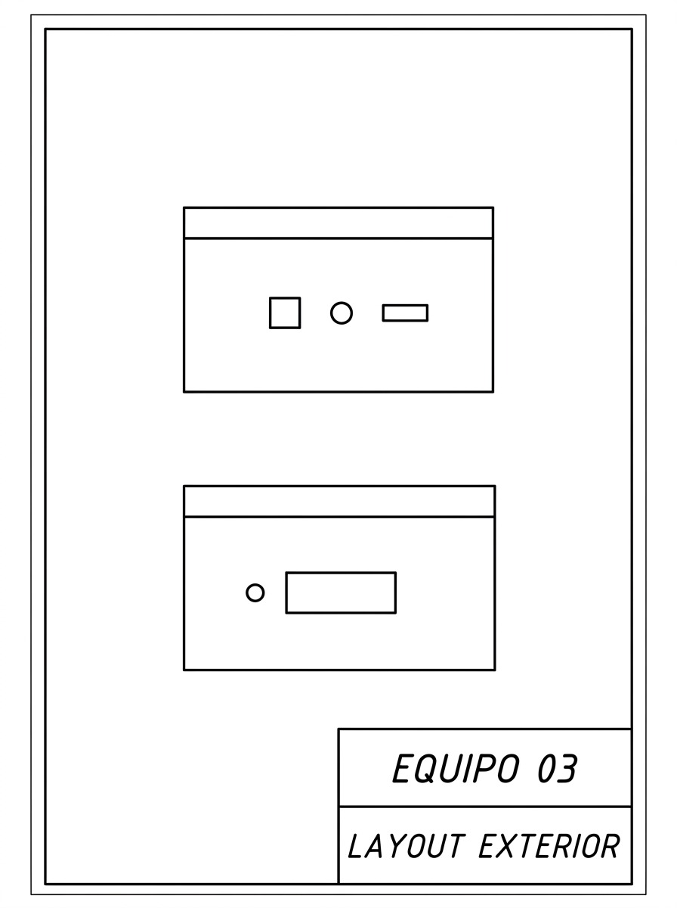
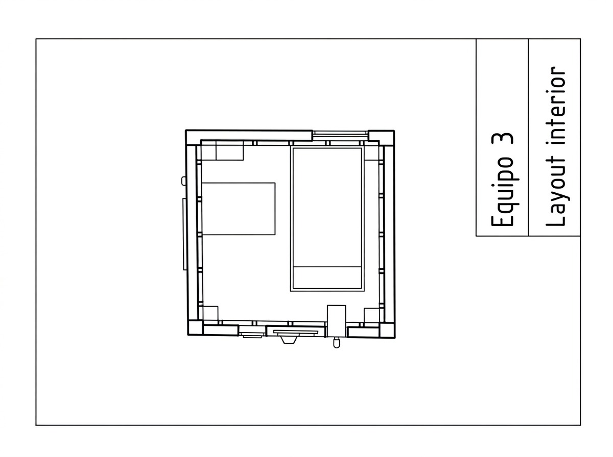
11.2 Conexiones del nodo
| Componente | Pin del componente | Conexión | Notas |
|---|---|---|---|
| Alimentación | Batería → LM7805 | 5 V para el ESP32-C3 Mini, el display LCD y el MQ-2. El ESP entrega 3,3 V al DHT22, al MPU6050 y al sensor de llama | El LM7805 reemplazó al módulo step-down que se quemó. Voltaje verificado con multímetro. NUEVO: Ya no se usa más la batería de 12V, ahora usamos una batería portátil de 5V |
| DHT22 | DATA | GPIO 2 | Temperatura y humedad. Alimentado con 3,3 V |
| LCD 16x2 (I2C) | SDA / SCL | GPIO 8 / GPIO 9 | Dirección I2C 0x27. Alimentado con 5 V |
| MPU6050 (I2C) | SDA / SCL | GPIO 8 / GPIO 9 | Comparte el bus con el LCD (dirección 0x68). Alimentado con 3,3 V |
| MQ-2 | AO | GPIO 1 | Lectura analógica de 0 a 4095; precalentamiento de 60 s. Alimentado con 5 V |
| Sensor de llama IR | AO | GPIO 0 | Lectura analógica; con fuego el valor de las radiaciones infrarrojas baja. Alimentado con 3,3 V |
| Pulsador | No aplica | GPIO 4 | Entrada con pull-up interno; cambia de página en el LCD y reinicia el ESP32-C3 Mini |
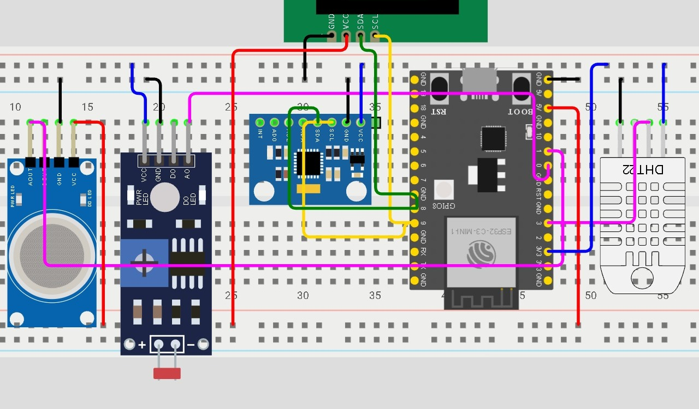
11.3 Mapa de nodos
| Nodo | Ubicación propuesta | Sensor específico | Base común |
|---|
Tercera sección
12. Componentes
El nodo Siniestro usa la base común de todos los nodos (ESP32, temperatura + humedad y display LCD) y suma tres sensores propios para detectar humo y gas, fuego y movimiento brusco.
Base común de todos los nodos
Sensores del nodo Siniestro
Tercera sección · Laboratorio de Aplicaciones
13. Diseño de la aplicación (dashboard)
Tablero central con el estado de cada sector en tiempo real, históricos y alertas. Debe poder verse en una PC, una pantalla institucional y un celular.
Dashboard del nodo
El dashboard del nodo sigue la orientación de la profesora: tema oscuro, encabezado con estado, tarjetas de indicadores, semáforo, histórico de 24 horas, alertas y salud del nodo (señal WiFi, tiempo encendido, mensajes por minuto y tópico). Recibe los datos por MQTT sobre WebSockets y tiene un modo simulado para probarlo sin el nodo.
Wireframe
Capturas del dashboard
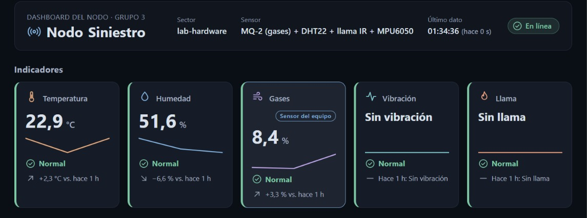
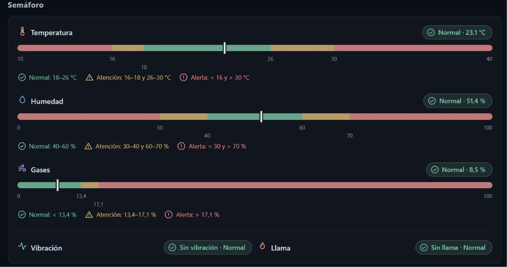
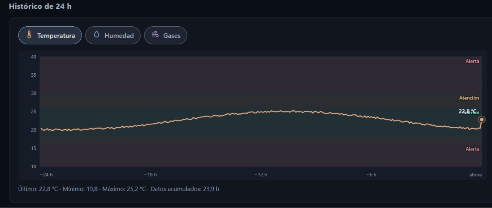
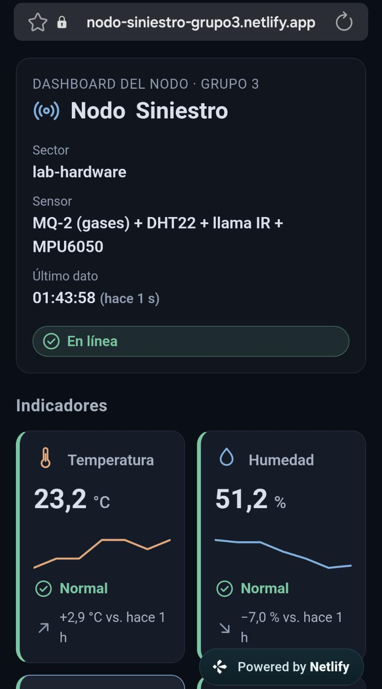
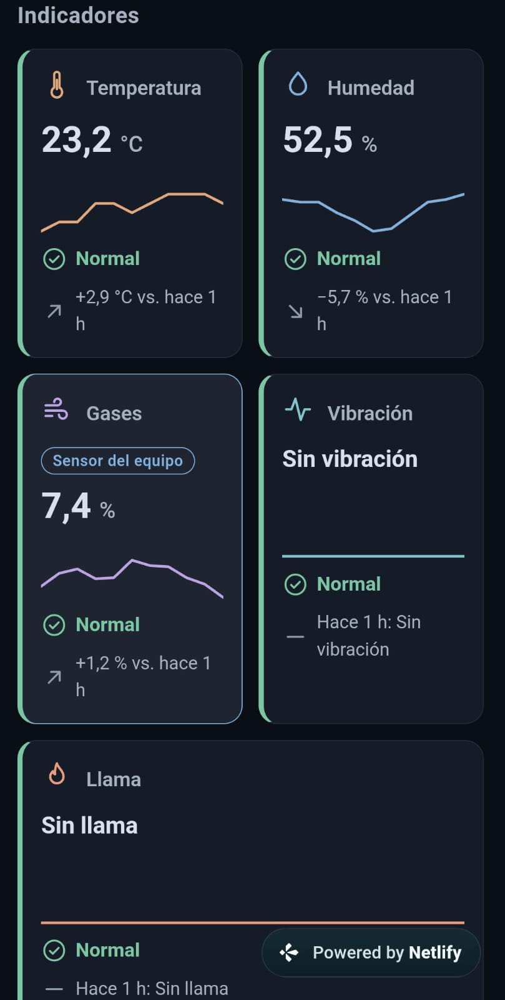
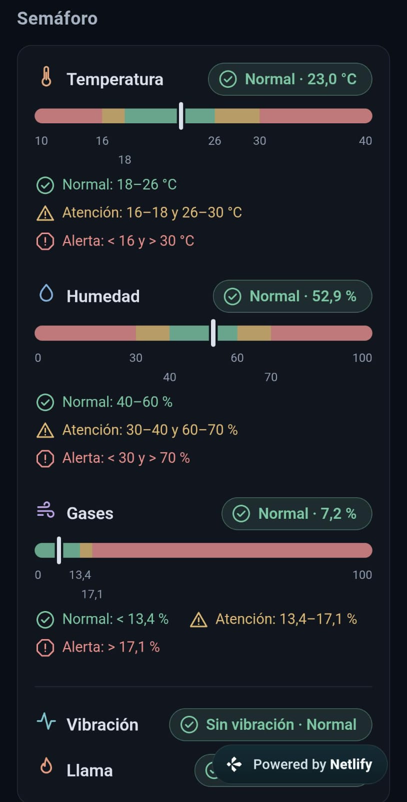
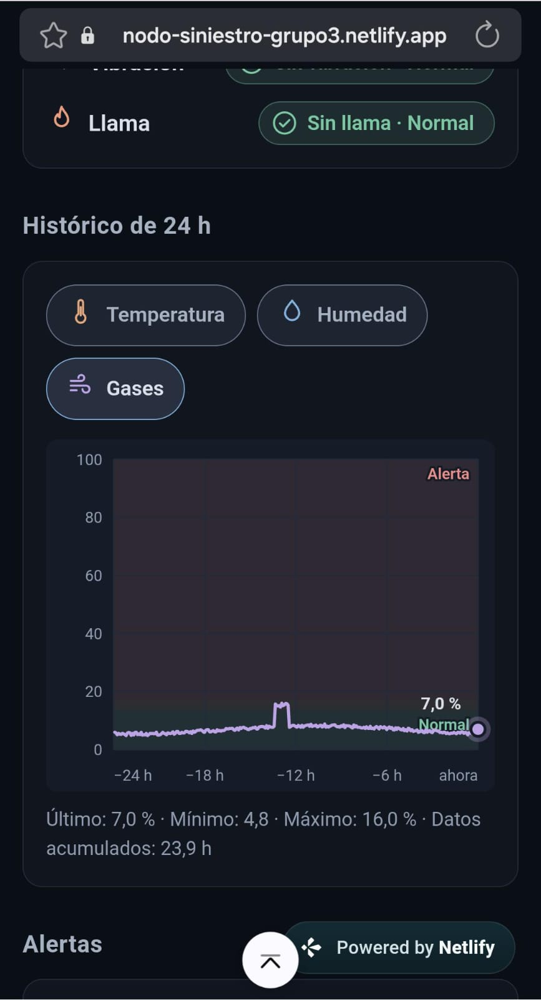
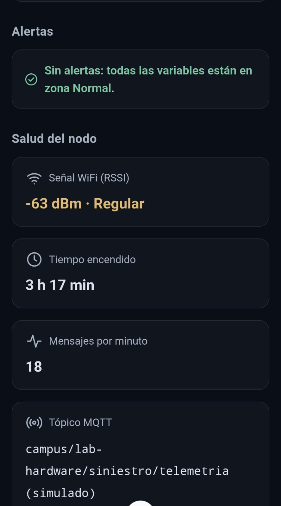
Semáforo por variable
| Variable | Normal | Atención | Alerta |
|---|---|---|---|
| Gases y humo (MQ-2, ADC) | < 550 | 550 – 700 | > 700 |
| Llama (sensor IR) | Sin llama | Sin nivel | Promedio de 8 lecturas < 190 durante 2 s |
| Movimiento (MPU6050) | Sin movimiento | Variación > 2,5 m/s² respecto de la gravedad | 2,5 m/s² respecto de la gravedad |
| Temperatura (referencia de la plantilla) | 18 – 26 °C | 16 – 18 / 26 – 30 °C | < 16 / > 30 °C |
| Humedad relativa (referencia de la plantilla) | 40 – 60 % | 30 – 40 / 60 – 70 % | < 30 / > 70 % |
| Nodo | Datos hace < 2 min | 2 – 5 min | Desconectado > 5 min |
Cómo se definieron los umbrales de gas y movimiento
MQ-2 (gases combustibles y humo)
- Umbral de alerta: la lectura filtrada del ADC (escala de 0 a 4095) tiene que superar 700. La alerta se libera cuando baja de 550. Esa diferencia de 150 se llama histéresis y evita que la alarma se active y se apague a cada rato.
- Precalentamiento: el MQ-2 necesita calentarse para dar lecturas estables, por eso durante los primeros 60 segundos no se emiten alertas de gas.
- Cómo se eligió el valor: con mediciones en el aula. El código tiene un modo calibración que imprime por el monitor serie una lectura por segundo, para medir y elegir el umbral. En la demo se verifica superando 700 y volviendo a bajar de 550.
- Valores medidos: aire limpio: 220 apróx (6% en porcentaje, como muestra el display). Con humo o gas: +700 (15%).
MPU6050 (acelerómetro)
- Umbral de movimiento: se detecta un golpe o una sacudida cuando la aceleración varía más de 2,5 m/s² respecto de la gravedad (9,81 m/s²), es decir, cerca de 0,25 g. El rango del sensor es de ±2 g.
- Muestreo: el acelerómetro se lee cada 100 ms, y el movimiento se mantiene como detectado durante 3 segundos desde el último golpe.
- Cómo se verificó: sacudiendo la caja del nodo y comprobando que se registre la alerta.
Sensor de llama IR (KY-026)
- Cómo lee: se usa la salida analógica (AO). Con fuego el valor de la lectura baja. Se toma una muestra cada 100 ms y se promedian las últimas 8 lecturas.
- Umbral de alerta: se declara fuego si el promedio queda por debajo de 190 durante 2 segundos seguidos (20 lecturas). La alarma se libera tras 3 segundos sin señal, y tiene una histéresis de 20 para que no se active y se apague a cada rato.
- Cómo se eligió el valor: con mediciones en un aula con luz normal, con sol directo sobre el sensor y frente a una llama real. Con la luz normal del aula el sensor marcó entre 210 y 250, y frente a la llama entre 150 y 200. El 190 queda en el medio.
- Filtro contra el sol: la llama parpadea y el sol no. Por eso, además de bajar del umbral, el valor tiene que variar (diferencia entre máximo y mínimo de la ventana de al menos 150 cuentas). Este filtro está activado en el código.
- Estado: el umbral es provisorio. Falta proteger el sensor de la luz ambiente, porque los valores del aula y de la llama están cerca.
Seguimiento
14. Presupuesto y lista de materiales (BOM)
Costo de un nodo. Multipliquen por la cantidad de nodos y sumen el servidor si hay que comprarlo.
| Ítem | Cant. | Precio unit. | Subtotal |
|---|
Los precios salen de la bitácora y se cotizaron en Mercado Libre. Se compró en tres tandas: el 16 y 17 de junio, del 18 al 24 de agosto (junto con otro equipo, para compartir el envío) y el 5 de octubre (pines hembra). La carta Gantt registra $ 33.595 y $ 48.540 para las dos primeras, que suman $ 82.135.
Esa cifra es mayor que los $ 67.951 de la tabla porque entre las compras hay un sensor que finalmente no se usa, y porque de la segunda compra no quedó registrado lo que se pagó: esos precios se volvieron a buscar en internet y pueden diferir un poco. Además, el precio del envío en la 2da compra no es incluido en la tabla.
Seguimiento
15. Bitácora de pruebas
Evidencia técnica de que el sistema funciona: qué se probó, qué se esperaba y qué pasó.
| Fecha | Prueba | Resultado esperado | Resultado obtenido | Estado |
|---|
Seguimiento
16. Resultados y mejoras futuras
Resultados
Nivel 1. Según los registros del equipo:
- El ESP32-C3 Mini está conectado y lee cuatro sensores: MQ-2, sensor de llama IR, MPU6050 y DHT22.
- Publica por MQTT en el broker del Dashboard general. La primera prueba exitosa fue el 23/10 y el 06/11 se verificó que todos los datos llegan correctamente.
- Los datos se visualizan en el Dashboard del grupo y en la página web propia del nodo, que registra correctamente todos los datos.
Nivel 2. El equipo avanzó con el gabinete: la caja estanca ya está perforada y falta el montaje definitivo de los componentes.
Problemas encontrados y cómo se resolvieron
| Problema | Cómo se resolvió | Estado |
|---|---|---|
| Los pines del primer ESP quedaron soldados al revés. | Se consiguió otro ESP32-C3 Mini. El primero se corrigió con pines nuevos (29/10) y quedó de respaldo. | Resuelto |
| La asignación del nodo en Teams no coincidía con lo definido en clase. | Se reconfirmó el nodo Siniestro el 13/08. | Resuelto |
| Errores de sensor (Sensor Error) en las prácticas. | Era una mala asignación de pines en el código. Se solucionó verificando los GPIO. | Resuelto |
| La señal WiFi del ESP era muy baja. | Se soldó una antena (09/10) y se le dio forma de rulito para que capte mejor. | Resuelto |
| El cobre de la protoboard absorbía la señal. | Se retiró una pata de la antena, se sumaron cables y se montó el ESP sobre tiras de pines. Así se logró la primera prueba exitosa (23/10). | Resuelto |
| El módulo step-down entregaba 12 V en su salida de 5 V (se quemó). | Se reemplazó por un regulador LM7805, verificado con multímetro y probado con el ESP de respaldo (03 y 04/11). | Resuelto |
| El 29/10 la computadora no detectaba el puerto del ESP nuevo. | Había un resto de estaño de la soldadura de la antena. Al retirarlo se quemaron unas resistencias, pero el ESP siguió funcionando. | Resuelto |
| El 30/10 los datos del acelerómetro no llegaban al Dashboard. | Faltaba agregar el tópico en el Dashboard. Se agregó y hoy todos los datos llegan correctamente. | Resuelto |
| En la placa experimental el ESP tardaba muchísimo en conectarse al WiFi (05/11). | Se resoldaron las conexiones con el cobre cubierto, pero no alcanzó. La causa era la caída de voltaje al transmitir a la potencia por defecto (19,5 dBm). Al bajarla a 8,5 dBm el ESP se conecta y envía todos los datos (06/11). | Resuelto |
| Diferencias de organización entre los integrantes: la dispersión en clase afectaba el aporte al trabajo. | Se resolvieron hablando con los profesores y asignando tareas para empezar a trabajar al inicio de cada clase, cada uno enfocado en algo distinto. | Resuelto |
| Con el nodo conectado solo a la batería, sin USB, el display LCD titila. | Se comprobó que no es un error del display. Parece que la batería se descargó: falta probar otra batería o verificar las conexiones. Optamos por usar una batería portátil de 5V | Resuelto |
Faltan los datos reales que midió el nodo, con los gráficos del histórico, y la prueba completa con el nodo armado en la caja.
Mejoras futuras
- Actualización de firmware por OTA.
- Notificaciones de alertas por correo o mensajería.
- Módulo de consumo energético con sensor no invasivo.
- Análisis estadístico del histórico (promedios, picos, horarios críticos).
- Más nodos y una pantalla de monitoreo permanente en la escuela.
- Cruzar los datos de varios sensores para reducir las falsas alarmas, en la estación principal o dentro del nodo.
- Proteger el sensor de llama de la luz ambiente y ajustar su umbral.
- Definir un umbral de alerta de temperatura.
Manual de usuario
17. Cómo usar esta documentación
Instrucciones para que el equipo complete, actualice y publique su carpeta del proyecto.
Editar los datos del equipo
- Abran
assets/js/datos.jscon un editor de código (por ejemplo VS Code). - Completen nombre del equipo, curso, nodo asignado e integrantes con el formato
"Apellido, Nombre". - Publiquen la planilla de la Gantt en Google Sheets y peguen el enlace en
ganttSheetUrl(ver Carta Gantt). - Actualicen la Gantt, el presupuesto, las pruebas y el control de cambios a medida que avanza el proyecto.
- Los textos largos de cada apartado se editan directamente en
index.html.
Publicar con GitHub Pages
- Creen un repositorio en GitHub y suban esta carpeta completa.
- En el repositorio: Settings → Pages → Branch: main → / (root) y guarden.
- En uno o dos minutos la documentación queda en
https://usuario.github.io/repositorio/. - Si el dashboard es una página web, súbanlo a otro repositorio (o a una carpeta
/app) y copien su dirección enpreviewUrl.
Mostrar el dashboard en el visor
- Página web propia (HTML/CSS/JS, React, Vue): funciona directo con GitHub Pages o Netlify.
- Grafana o Node-RED Dashboard dentro de la escuela: solo se ve desde la red escolar. Para la feria, usen la dirección local del servidor (por ejemplo
http://192.168.1.50/). - Si la página bloquea el visor, usen Abrir en una pestaña nueva.
Exportar a PDF
Desde el navegador: Imprimir → Guardar como PDF. Se imprimen todos los apartados juntos.